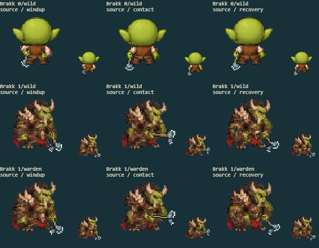
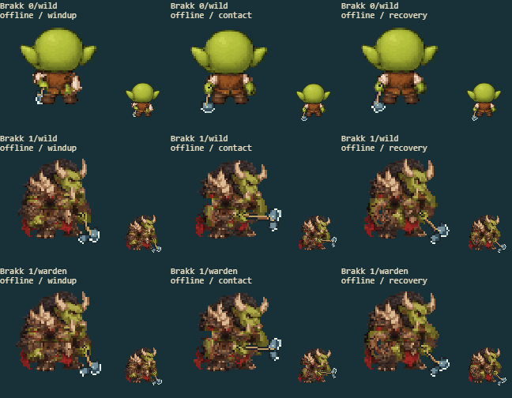

6 separate source/offline fights, covering every available form and path. The right panels show the actual cached sprite drawn in battle, before the hit-flash overlay, at native size and enlarged. The arena panel retains combat effects.
Full delivered-game screenshot · Contact inspection
| Factor | Result | Observed |
|---|---|---|
| Arm ownership | pass | Base green fists and pale cuffs move together; evolved bracers do not leave a second stationary hand. |
| Torso continuity | pass | The brown leather coat stays filled beneath raised arms instead of becoming a green hand-shaped body patch. |
| Grip contact | pass | The axe handle stays attached to its source hand; the support hand follows the same held handle during attacks. |
| Sprite completeness | pass | Horn, hair, armor and red costume details remain visible; both available combat forms load in both builds. |
| Motion and cell bounds | pass | Windup/contact/recovery maintain the authored arm width and connected wrist; all eight decoded facings remain complete. |


Original/current anatomy in all eight facings: authored form 0 · authored form 1 · authored form 2